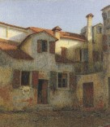

 |
|
Gli abitanti
del Capoluogo quando parlano con quelli di una frazione lo fanno solitamente
con distacco, con superiorità, in quanto si ritengono avvantaggiati
rispetto ai loro concittadini. I vantaggi sono principalmente quei servizi
essenziali che sono alla base di una comunità civile e che nel
caso della frazione di Sesto Ulteriano molti mancano ancora. Ben a ragione
si può pensare a questa frazione con un vero distacco, perchè
oltre ad essere molto distante e praticamente isolata, questo paese rimane
tuttora difficile da raggiungere per le sue strade tortuose e strette,
tanto che ben pochi cittadini di San Giuliano sanno dove si trovi.
Antiche suddivisioni feudali hanno voluto che Sesto Ulteriano facesse
parte del Comune di San Giuliano; però la sua vita ha sempre stentato
a trovare un vero legame con il Comune in quanto è più vicino
a Milano, Locate Triulzio ed a Chiaravalle. Milano assorbe quasi tutta
la mano d'opera del nostro piccolo paese ed è naturale che gli
abitanti si ricordino solo di San Giuliano quando hanno bisogno di qualche
certificato o documento comunale.
Ma il Comune, ossia l'Amministrazione, si ricorda di Sesto Ulteriano?
Non è nostro compito entrare in questa polemica, però è
nostro dovere sottolineare le necessità di questi abitanti, perchè
anche loro fanno parte del grande Comune di San Giuliano.
Infatti è urgente:
- la sistemazione della fognatura
- la copertura di rogge che passano ancora scoperte per il centro abitato
- l'apertura di una Farmacia Comunale
- un miglior servizio nel prelievo delle immondizie, ecc.
Il paese così dimenticato è rimasto quello di tanti anni
fa, ma nonostante questo pochi desiderano trasferirsi nel capoluogo, amano
il loro verde luogo tranquillo e lo desiderano vedere rifiorire. Il Comune
in verità aveva pensato a questo centro di persone, che abitano
in case antiche ed a volte anti-igieniche, in un modo molto strano. Sfruttando
la posizione di Sesto Ulteriano (vicinanza a Milano ed alla Autostrada
del Sole) permetteva una grossa lottizzazione industriale sul vasto terreno
agricolo che circondava una parte del paese. A questo insediamento di
industrie doveva seguire in un secondo tempo la lottizzazione di un'altra
area per zona residenziale. Gli abitanti, appena intravista la possibilità
di farsi una casa più comoda e moderna - sempre nella loro zona
- si sono presentati per prenotare un loro piccolo appezzamento di terreno.
Senonchè da molti anni aspettano ancora, senza sapere nulla di
preciso sulla definitiva sistemazione di questa intricatissima faccenda.
Questa è senza dubbio la più grande delusione che hanno
avuto dal Comune. Certo i piani comunali sono venuti meno, in quanto le
industrie non sono accorse come molti prevedevano e quelle già
insediate hanno avuto vita breve.
Perciò il concentramento di grossi fabbricati per il personale
di queste industrie non è stato più possibile vederlo realizzare.
Forse la grande ragione sta nel fatto che la mancata speculazione ha rallentato
se non del tutto fatto sfumare il grande e tanto atteso progetto.
Certo ora non vale più la pena di portarlo avanti per una lottizzazione
a sole villette (secondo gli Amministratori). Però gli abitanti
di Sesto che speravano di poter fare su quel terreno la loro casetta,
sono rimasti ancora ben decisi a vederci chiaro.
Loro non va che venga negato per scopi misteriosi un tanto sognato desiderio,
specialmente ora che sembrava realizzabile. Molti lavoratori avrebbero
avuto una casa, ma questo non sembra possibile perchè gli Amministratori
hanno un'altra concezione di case per i lavoratori.
Però a Sesto sanno di avere attorno al proprio paese solo abbondanza
di terreno verde, perciò non desiderano sofforare in casermoni
simili ad alveari. Aspettano di essere veramente padroni in casa propria,
non schiavi di altri sconosciuti coinquilini. Il Comune ha sempre fatto
poco per questa Frazione, ma questa volta se saprà dare il via
a questa libera iniziativa per permettere lo sviluppo di una vasta zona
solo a villette, ne avrà pure di riflesso dei grandi vantaggi.
Ormai l'edilizia a San Giuliano è bloccata, è stata soffocata,
è ormai satura e sia le imprese che i lavoratori edili avranno
da questo spontaneo impulso una sicura fonte di lavoro. Che cosa si aspetta?
(B. Mazza)
(da "Sguardo Panoramico", giornale d'informazione sangiulianese,
n.9, anno II, giugno 1965)
|
|
|